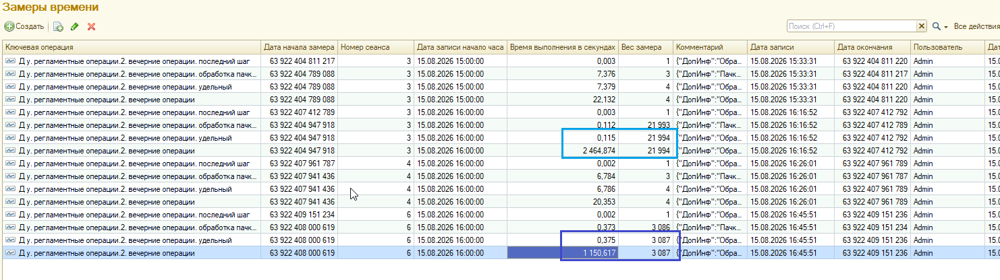

План тестирования и разбор замеров IMDEV-8663.1
Фоновые регламентные операции (диспетчер порций). Источники:
Замеры_ФизЛицаНеРДУ_и_РДУ.png (новый алгоритм, DR),
ЗамерыБыли.xlsx (прод / как сейчас).
Главный показатель для сравнения — ключевая операция без суффикса:
Д у. регламентные операции.2. вечерние операции
(полное время прогона, wall-clock).
Строки …обработка пачки договоров и …удельный в регистре БСП —
это удельное время (сек на 1 договор), а не длительность пачки.
Проверка: удельное × вес ≈ полное время.
1. Цель тестирования
- Подтвердить корректность нового параллельного режима (порция договоров = 1 ФЗ).
- Сравнить время вечернего регламента с продовым baseline на сопоставимых объёмах.
- Зафиксировать, что прикладной результат (планы/операции) не хуже типового пути.
2. Как читать строки регистра замеров
| Ключевая операция |
Что означает «Время выполнения» |
Вес |
…вечерние операции |
Полное время прогона (сек) — использовать для «было/стало» |
≈ число договоров (+ хвост шага) |
…обработка пачки договоров |
Удельное сек/договор по накопленным пачкам (комментарий часто «Пачка 1…») |
сумма размеров пачек |
…удельный |
Сводный удельный показатель БСП |
вес + последний шаг |
…последний шаг |
Хвост после последней фиксации пачки до завершения замера |
обычно 1 |
Пример из скрина (РДУ ~22k): полное 2464,874 сек;
удельное пачки 0,112 × вес 21994 ≈ 2463 сек — сходится.
Нельзя читать 0,112 сек как «пачка прошла за 0,1 секунды».
3. План тестирования
-
T-01 Дымовой — малый отбор (3–10 договоров), 12 потоков.
Ожидание: прогон без ошибок; сводка; прогресс «Договоров обработано…».
-
T-02 ФЛ, не Розничное ДУ — отбор ~3000 договоров, 12 потоков,
те же операции вечернего регламента, что на проде.
-
T-03 Розничное ДУ — отбор ~22 000 договоров, 12 потоков.
-
T-04 Последовательный режим — потоки = 0 (или ФЗ недоступны):
результат совпадает с типовым sync-путём.
-
T-05 Порция = 1 (константа порции): зерно как «1 договор = 1 ФЗ»
через новый диспетчер; прогон завершается, время может быть хуже порции 50.
-
T-06 Качество данных — выборочно сравнить созданные/проведённые
планы и статусы операций с эталоном (тот же период/отбор без расширения или на копии «до»).
-
T-07 Ошибки — при сбое дочернего: журнал, сводка, остальные порции
продолжают; при исключении родителя — дети отменяются.
-
T-08 Замер — снять строки РС замеров времени по ключевой операции
вечерних; сохранить скрин/выгрузку рядом с этим отчётом.
Окружение зафиксировать в протоколе: платформа, версия конф, потоки, значения констант порции/пачки, имя ИБ.
4. Результаты нового алгоритма (DR, 15.08.2026)
Источник: Замеры_ФизЛицаНеРДУ_и_РДУ.png. Платформа 8.3.27.2214, конф 1.5.29.7, потоков 12, пользователь Admin.

| Сценарий |
Договоров |
Полное время |
Минут |
Удельное пачки |
Удельное × вес |
Сеанс / запись |
Статус |
| Дымовой (малый) |
3 |
22,132 сек |
0,4 |
7,376 |
≈22,1 |
сеанс 3, 15:33 |
OK |
| Дымовой (повтор) |
3 |
20,353 сек |
0,3 |
6,784 |
≈20,4 |
сеанс 4, 16:26 |
OK |
| Розничное ДУ (РДУ) |
21 993 |
2 464,874 сек |
41,1 |
0,112 |
≈2 463 |
сеанс 3, 16:16 |
OK |
| ФЛ, не Розничное ДУ |
3 086 |
1 150,617 сек |
19,2 |
0,373 |
≈1 151 |
сеанс 6, 16:45 |
OK |
Разбор таблицы нового алгоритма: все четыре прогона без ошибки;
для больших отборов удельное × вес совпадает с полным временем;
комментарии содержат «Потоков: 12» и фактическое число договоров.
5. Baseline с прода (как сейчас)
Источник: ЗамерыБыли.xlsx (выгрузка РС замеров, операция
…вечерние операции, потоков 12). Период выборки в файле: конец июля — середина августа 2026.
Прод Розничное ДУ (~22 000)
- Прогонов в выборке: 13
- Медиана полного времени: 5 887 сек ≈ 98,1 мин
- Типичный коридор (без редких выбросов): 92–112 мин
- Мин / макс: 27,0 / 111,6 мин (есть ускоренные дни 27 и 42,5 мин)
- Пример: 29.07.2026 — 22 034 дог., 5 574 сек ≈ 92,9 мин
Прод ФЛ не РДУ (~3 080)
- Дневные «нормальные» прогоны (без ночных выбросов >1,5 ч): 6
- Медиана: 2 407 сек ≈ 40,1 мин
- Коридор: 37–45 мин
- Пример: 29.07.2026 — 3 087 дог., 2 492 сек ≈ 41,5 мин
- В файле также есть аномалии 2–6+ часов (нагрузка/ночь) — в сравнение не брать
6. Сравнение было / стало
| Сценарий |
Договоров |
Прод (типично / медиана) |
Новый алгоритм (DR) |
Ускорение |
Экономия времени |
| Розничное ДУ |
~22 000 |
≈ 98 мин (медиана)
коридор 92–112 |
41,1 мин
(2 465 сек) |
≈ 2,4× |
≈ −57 мин (−58%) |
| ФЛ, не Розничное ДУ |
~3 080 |
≈ 40 мин (медиана)
коридор 37–45 |
19,2 мин
(1 151 сек) |
≈ 2,1× |
≈ −21 мин (−52%) |
Вывод по производительности: на DR при 12 потоках новый алгоритм даёт примерно
двукратное сокращение wall-clock на обоих целевых отборах относительно типичного прода.
Это согласуется с ранее зафиксированными ориентирами (~1,5 ч → ~45 мин для РДУ; ~40 → ~20 мин для ФЛ).
Оговорки: DR ≠ прод (железо, данные, конкурирующая нагрузка).
Сравниваем близкие объёмы и ту же ключевую операцию / 12 потоков.
Отдельные продовые дни уже были быстрее медианы (27–42 мин на 22k) — ориентир для приёмки:
стабильно не хуже типичного коридора и целевой выигрыш на повторных прогонах.
7. Критерии приёмки
| ID |
Критерий |
Порог |
По DR 15.08 |
| A1 |
Прогон РДУ ~22k завершён без ошибки |
да |
да |
| A2 |
Прогон ФЛ ~3k завершён без ошибки |
да |
да |
| A3 |
Время РДУ vs типичный прод (~98 мин) |
заметно лучше (ориентир ≤ 50–60 мин на сопоставимом стенде) |
41 мин |
| A4 |
Время ФЛ vs типичный прод (~40 мин) |
заметно лучше (ориентир ≤ 25 мин) |
19 мин |
| A5 |
Удельное × вес ≈ полное время |
сходимость ±1–2% |
сходится |
| A6 |
Качество документов/операций (T-06) |
без расхождений на выборке |
выполнить / зафиксировать отдельно |
8. Чек-лист протокола прогона
- [ ] ИБ / копия, версия расширения
IM8663
- [ ] Константы: порция, пачка, потоки (факт значения)
- [ ] Отбор договоров (РДУ / ФЛ), дата периода, группа «вечерние»
- [ ] Скрин/выгрузка РС замеров + сводка из сообщения результата
- [ ] Замечания по ошибкам в журнале / проблемным договорам